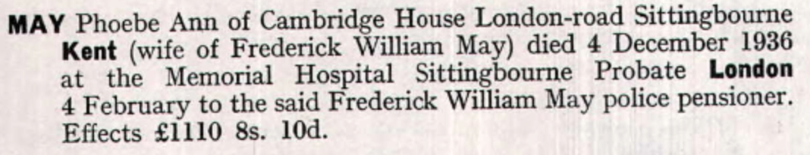

Phoebe Ann May (née Culmer) cMay 1866 - 1936
[ Home ] | [ Calendar ] | [ Surnames Index ] | [ Census Index ] | [ Family History ]The child of George Culmer (an agricultural laborer) and Harriet Marten, Phoebe Culmer, the first cousin three-times-removed on the mother's side of Nigel Horne, was born in Hernhill, Kent, England c. May 18661,2,3 and baptized there at St Michael on Jun 17, 1866. She married Frederick May (a metropolitan police sergeant) in Bridge, Kent, England around May 18895.
During her life, she was living at Sheldwich Road, Preston, Faversham, Kent on Apr 2, 18711; at St Agathas Square, Shoreditch, London, England on Apr 5, 18916; at Catherine Grove, Greenwich, London on Mar 31, 19017; at Metropolitan Police Grange Road, Bermondsey, London on Apr 2, 19118; and at Cambridge House, London Road, Sittingbourne, Kent in 1936.
She died on Dec 4, 1936 in Milton, Kent, England3,4.
Parents
- George was born c. 1824
- Harriet was born c. 1826
Citations
- 1871 England, Wales & Scotland Census - Findmypast (was age 4 and the daughter of the head of the household)
- England & Wales births 1837-2006 - Findmypast
- England & Wales deaths 1837-2007 - Findmypast
- England & Wales Government Probate Death Index 1858-2019 - Findmypast
- England & Wales Marriages 1837-2005 - Findmypast
- 1891 England, Wales & Scotland Census - Findmypast (was age 24 and the wife of the head of the household)
- 1901 England, Wales & Scotland Census - Findmypast (was age 34 and the wife of the head of the household)
- 1911 Census for England & Wales - Findmypast (was age 44 and the wife of the head of the household)
Media
Phoebe Culmer - Probate

England & Wales births 1837-2006 - BMD/B/1866/2/AZ/000138/122
1871 England, Wales & Scotland Census Transcription - GBC-1871-0014216340
England & Wales marriages 1837-2005 Transcription - BMD-M-1889-2-AZ-000071-291
1891 England, Wales & Scotland Census - GBC/1891/0002156837
1901 England, Wales & Scotland Census - GBC/1901/0006461399
1911 Census for England & Wales - GBC/1911/RG14/01889/0861/2
England & Wales deaths 1837-2007 - BMD/D/1936/4/AZ/000630/057
England Births & Baptisms 1538-1975 - R_884945522
Kent Baptisms - GBPRS/CANT/B/96334295
England Births & Baptisms 1538-1975 - R_938106849
England & Wales Government Probate Death Index 1858-2019 - GBOR/GOVPROBATE/C/1937-1937/00085409
Family Tree

Generated by ged2site. Last updated on Jun 11, 2024